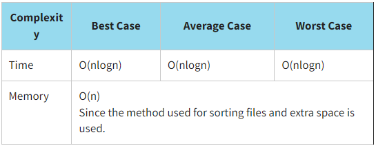
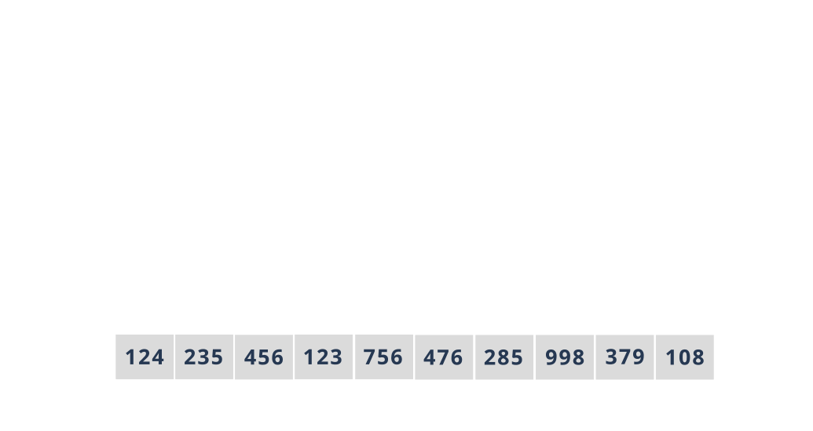

Merge Sorting
Merge sort is a sorting algorithm that orders lists (or other data structures whose elements can only be accessed sequentially, such as streams) in a specific order. To merge means to combine two (or more) sequences into one ordered sequence by cyclically selecting the items currently available.
When sorting an array by merge, we split the array in half until each chunk is one element long. Then these areas are returned to their place (merged) in the correct order. For the algorithm to work, we must implement the operation of recursively dividing an array into groups (Sort method) and merging in the correct order (Merge method).
Merge sort is a stable sorting algorithm because equal elements are not rearranged in the final sort order with relation to one another.
Let us sort our array of library cards using the merge sort. Recall that the values of library cards are {124,235,456,123,756,476,285,998,379,108}.
Look at the program implementation of the merge sort.
JavaScript realisation
function mergeSort(arr) {
if (arr.length > 1) {
const mean = Math.floor(arr.length / 2);
const leftArr = arr.slice(0, mean);
const rightArr = arr.slice(mean, arr.length);
mergeSort(leftArr);
mergeSort(rightArr);
let i = 0;
let j = 0;
let k = 0;
while (i < leftArr.length && j < rightArr.length) {
if (leftArr[i] < rightArr[j]) {
arr[k] = leftArr[i];
i += 1;
} else {
arr[k] = rightArr[j];
j += 1;
}
k += 1;
}
while (i < leftArr.length) {
arr[k] = leftArr[i];
i += 1;
k += 1;
}
while (j < rightArr.length) {
arr[k] = rightArr[j];
j += 1;
k += 1;
}
}
}
const initData = [124, 235, 456, 123, 756, 476, 285, 998, 379, 108];
console.log(`Initial array:`, initData);
mergeSort(initData);
console.log(`Sorted array:`, initData);
The result:
Initial array: [ 124, 235, 456, 123, 756, 476, 285, 998, 379, 108 ]
Sorted array: [ 108, 123, 124, 235, 285, 379, 456, 476, 756, 998 ]
You should choose the merge sort when:
- there is a need to implement external sorting
- an array is not partially sorted, so despite the fact that in the worst case scenario it will work faster than the linear one, in the best case scenario, its performance will be lower than that of the linear one
- there are no limits on memory usage
Click here to see a more detailed explanation of the merge sort.